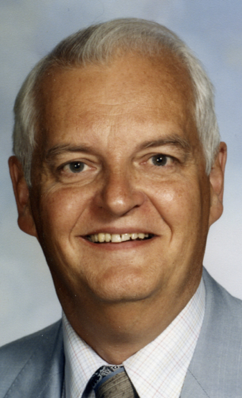
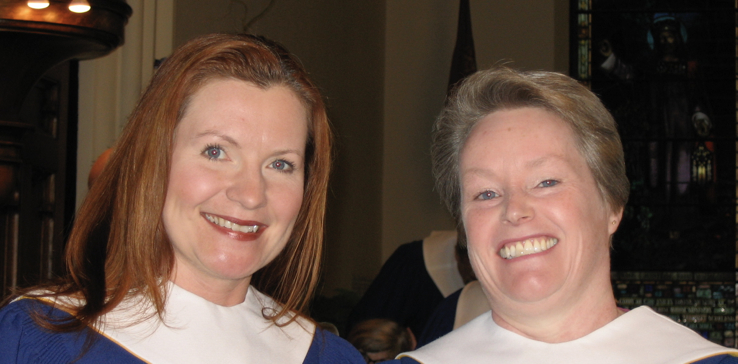
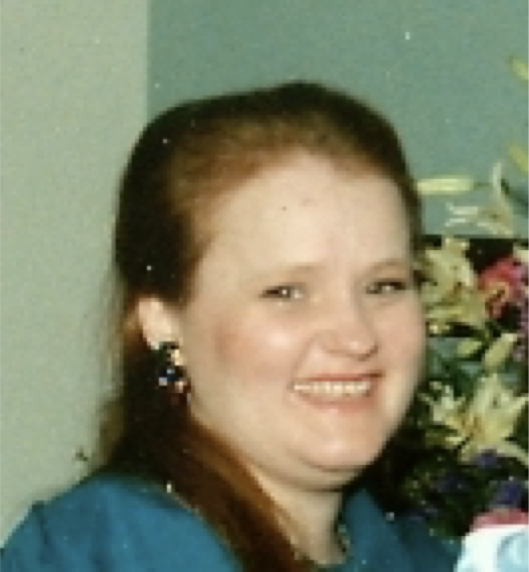
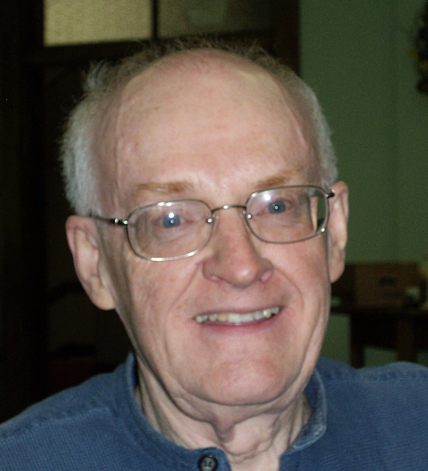

-1-MasterItem.svg)
Stories of Westminster United Church & its People / Page
155
A partial list of soloists since WW II:
Sopranos: Helen Tennant, Jean Ramsay, Norma Lewiki, Phyllis Thompson,Norma
Vadeboncoeur,
Mary Ann Taylor, Tracy Dahl (above left), Susan Legrand, Cathy Harrison
Contraltos: Ruth Matheson, Margaret Norrie, Myfanwy Evans, Nina Biniowski,
Dorothy Howard,
Elona Schellenberg, Barbara Hicks, Pat Rabson, Mary Ann Taylor (Fall 89 to June
12), Nikki Kirton
Tenors: (Ralph Wickberg, Jack Sutton, before WW II), George Robson, Ted Alford,
Bruce Linney,
Orv Derraugh (above centre), Dan Peasgood, Jan Nato, Wes Rambo
Basses: Ed Forrest, Paul Fredette, Doug Sommerville, Ted Marshall, Fred Simpson
Tracy Dahl, opera star, was our soprano for a short period in the 80s to be
replaced
by Susan (Harrison) LeGrand. Finally the position of soprano soloist passed to
Cathy Harrison
(both Harrison sopranos above right), who continues to serve to this day.
Bruce Linney (left) was not only our tenor soloist for many years. He also
superintended the re-shaping the front of our sanctuary to better accommodate
performances of groups such as Manitoba Chamber Orchestra, the Winnipeg
Symphony, the Winnipeg Music Festival, etc. We benefit today from Bruce’s
work both in our own use of the platform and in the revenue earned
from renting our sanctuary.
Music at Westminster



